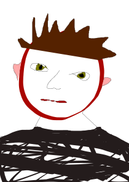

Определим тему исследования
Для большей наглядности привожу табличку
| Эффективность/время | Утро | День | Вечер |
| Концентрация | - | +- | + |
| Желание спать | +++ | - | +- |
| Необходимость что-то делать | ++ | +++ | -- |
Итак, это небольшая статья о себе. В прошлый раз я уже пыталась написать что-то интересное, но фантазии за неделю больше не стало, поэтому будь что будет.
Начнём с того, что мне нравится больше всего -- ничего не делать. А когда я ничего не делаю, я люблю залипать в Тиктоке (и даже не стыжусь этого!). Чтобы разбавить вечер, вот моё любимое видео
Можно было заметить некоторую тенденцию, ведь я подвожу к списку любимых вещей:
Самое время прерваться и показать мой авопортрет.
Теперь посмотрим на зависимость сил от времени. Приведём для этого "научную" статью.
| Эффективность/время | Утро | День | Вечер |
| Концентрация | - | +- | + |
| Желание спать | +++ | - | +- |
| Необходимость что-то делать | ++ | +++ | -- |
Как и в любой статье, есть конец. И везде есть недостатки. Но я их не буду называть
маленьким текстом я напишу, что опять тяну сдачу домашки до конца (ну почти)Хорошего дня!